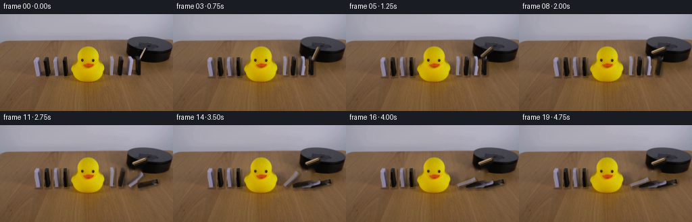
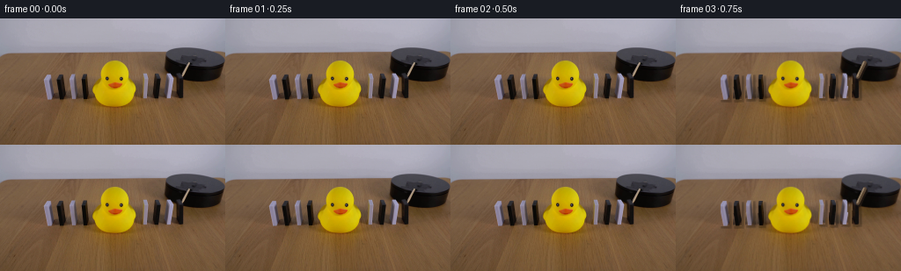
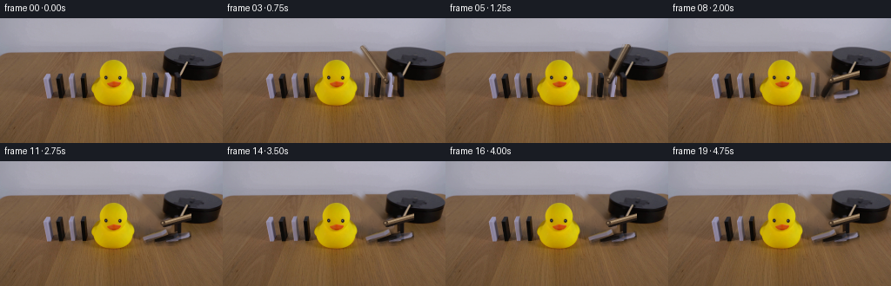
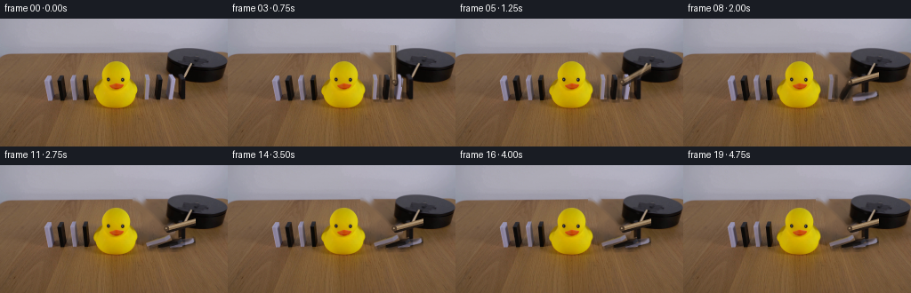
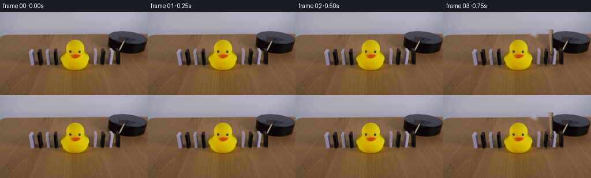

CODING AGENTS AS PIXEL WORLD MODELS
traex/DeepSeek-V4.1-Flash · 0056
点击播放 · 原生 RGB 像素
逐轮保存的候选
回放视频、检查图与代码变化。
每份候选均可单独播放。实际图片检查记录在下方工具轨迹中。
候选 01播放与检查图
点击播放 · 原生 RGB 像素


展开代码变化
--- 上一保存版本
+++ 本次保存版本
@@ -0,0 +1,284 @@
+from __future__ import annotations
+
+from pathlib import Path
+
+import cv2
+import numpy as np
+from PIL import Image
+
+import artifact_io
+
+
+ROOT = Path(__file__).resolve().parent
+WIDTH, HEIGHT, FRAME_COUNT, FPS = 256, 144, 20, 4
+SUPERSAMPLE = 3
+
+
+def ease(value: float) -> float:
+ value = float(np.clip(value, 0.0, 1.0))
+ return value * value * (3.0 - 2.0 * value)
+
+
+def polygon_mask(points: list[tuple[int, int]]) -> np.ndarray:
+ mask = np.zeros((HEIGHT, WIDTH), dtype=np.uint8)
+ cv2.fillPoly(mask, [np.asarray(points, dtype=np.int32)], 255)
+ return mask.astype(bool)
+
+
+def extract_rgba(source: np.ndarray, mask: np.ndarray) -> tuple[np.ndarray, tuple[int, int]]:
+ ys, xs = np.where(mask)
+ x0, x1 = int(xs.min()), int(xs.max()) + 1
+ y0, y1 = int(ys.min()), int(ys.max()) + 1
+ rgba = np.zeros((y1 - y0, x1 - x0, 4), dtype=np.uint8)
+ rgba[:, :, :3] = source[y0:y1, x0:x1]
+ rgba[:, :, 3] = mask[y0:y1, x0:x1].astype(np.uint8) * 255
+ return rgba, (x0, y0)
+
+
+def make_dominoes(source: np.ndarray) -> dict[str, dict]:
+ definitions = {
+ "W1": ([(51, 64), (59, 64), (60, 92), (50, 92)], (55.0, 92.0)),
+ "B1": ([(66, 64), (74, 64), (74, 92), (65, 92)], (69.5, 92.0)),
+ "W2": ([(80, 63), (87, 63), (87, 91), (79, 91)], (83.0, 91.0)),
+ "B2": ([(94, 64), (99, 64), (99, 91), (93, 91)], (96.0, 91.0)),
+ "W3": ([(163, 62), (169, 62), (169, 90), (162, 90)], (165.5, 90.0)),
+ "B3": ([(175, 63), (181, 63), (181, 91), (174, 91)], (177.5, 91.0)),
+ "W4": ([(188, 62), (194, 62), (195, 90), (187, 90)], (191.0, 90.0)),
+ "B4": ([(201, 60), (207, 60), (208, 90), (200, 90)], (204.0, 90.0)),
+ }
+ result = {}
+ for name, (points, pivot) in definitions.items():
+ mask = polygon_mask(points)
+ rgba, origin = extract_rgba(source, mask)
+ result[name] = {
+ "rgba": rgba,
+ "origin": origin,
+ "pivot": pivot,
+ "mask": mask,
+ }
+ return result
+
+
+def make_stick(source: np.ndarray) -> dict:
+ roi_x0, roi_y0, roi_x1, roi_y1 = 203, 46, 219, 70
+ crop = source[roi_y0:roi_y1, roi_x0:roi_x1].astype(np.int16)
+ red, green, blue = crop[:, :, 0], crop[:, :, 1], crop[:, :, 2]
+ warm_bright = (
+ (red > 62)
+ & (red - green > 4)
+ & (green - blue > 1)
+ & (red + green + blue > 190)
+ ).astype(np.uint8)
+ warm_bright = cv2.morphologyEx(warm_bright, cv2.MORPH_CLOSE, np.ones((2, 2), np.uint8))
+
+ mask = np.zeros((HEIGHT, WIDTH), dtype=bool)
+ mask[roi_y0:roi_y1, roi_x0:roi_x1] = warm_bright.astype(bool)
+ rgba, origin = extract_rgba(source, mask)
+ return {
+ "rgba": rgba,
+ "origin": origin,
+ "pivot": (214.5, 50.0),
+ "mask": mask,
+ }
+
+
+def make_background(source: np.ndarray, dominoes: dict[str, dict], stick: dict) -> np.ndarray:
+ removal = np.zeros((HEIGHT, WIDTH), dtype=np.uint8)
+ for sprite in dominoes.values():
+ removal |= sprite["mask"].astype(np.uint8) * 255
+ removal |= stick["mask"].astype(np.uint8) * 255
+ removal = cv2.dilate(removal, np.ones((5, 5), np.uint8))
+ return cv2.inpaint(source, removal, 4, cv2.INPAINT_TELEA)
+
+
+def warp_sprite(sprite: dict, angle: float) -> tuple[np.ndarray, tuple[float, float]]:
+ rgba = sprite["rgba"]
+ height, width = rgba.shape[:2]
+ large = cv2.resize(
+ rgba,
+ (width * SUPERSAMPLE, height * SUPERSAMPLE),
+ interpolation=cv2.INTER_CUBIC,
+ )
+ origin_x, origin_y = sprite["origin"]
+ pivot_x = (sprite["pivot"][0] - origin_x) * SUPERSAMPLE
+ pivot_y = (sprite["pivot"][1] - origin_y) * SUPERSAMPLE
+ matrix = cv2.getRotationMatrix2D((pivot_x, pivot_y), angle, 1.0)
+
+ corners = np.array(
+ [
+ [0.0, 0.0],
+ [width * SUPERSAMPLE, 0.0],
+ [width * SUPERSAMPLE, height * SUPERSAMPLE],
+ [0.0, height * SUPERSAMPLE],
+ ],
+ dtype=np.float32,
+ )
+ rotated_corners = cv2.transform(corners[None], matrix)[0]
+ minimum = np.floor(rotated_corners.min(axis=0)).astype(int) - 2
+ maximum = np.ceil(rotated_corners.max(axis=0)).astype(int) + 2
+ out_width, out_height = (maximum - minimum).astype(int)
+ matrix[:, 2] -= minimum
+
+ warped = cv2.warpAffine(
+ large,
+ matrix,
+ (int(out_width), int(out_height)),
+ flags=cv2.INTER_LINEAR,
+ borderMode=cv2.BORDER_CONSTANT,
+ borderValue=(0, 0, 0, 0),
+ )
+ top_left = (
+ origin_x * SUPERSAMPLE + minimum[0],
+ origin_y * SUPERSAMPLE + minimum[1],
+ )
+ return warped, top_left
+
+
+def composite(canvas: np.ndarray, rgba: np.ndarray, top_left: tuple[float, float], opacity: float = 1.0) -> None:
+ x = int(round(top_left[0]))
+ y = int(round(top_left[1]))
+ height, width = rgba.shape[:2]
+ sx0, sy0 = max(0, x), max(0, y)
+ sx1, sy1 = min(canvas.shape[1], x + width), min(canvas.shape[0], y + height)
+ if sx0 >= sx1 or sy0 >= sy1:
+ return
+ dx0, dy0 = sx0 - x, sy0 - y
+ dx1, dy1 = dx0 + sx1 - sx0, dy0 + sy1 - sy0
+ source = rgba[dy0:dy1, dx0:dx1].astype(np.float32)
+ alpha = source[:, :, 3:4] / 255.0 * opacity
+ destination = canvas[sy0:sy1, sx0:sx1].astype(np.float32)
+ canvas[sy0:sy1, sx0:sx1] = np.clip(
+ source[:, :, :3] * alpha + destination * (1.0 - alpha),
+ 0,
+ 255,
+ ).astype(np.uint8)
+
+
+def add_shadow(canvas: np.ndarray, rgba: np.ndarray, top_left: tuple[float, float], strength: float) -> None:
+ alpha = cv2.GaussianBlur(rgba[:, :, 3].astype(np.float32), (0, 0), 2.0 * SUPERSAMPLE)
+ shadow = np.zeros_like(rgba)
+ shadow[:, :, 3] = np.clip(alpha * strength, 0, 255).astype(np.uint8)
+ x, y = top_left
+ composite(canvas, shadow, (x + 2.0 * SUPERSAMPLE, y + 2.0 * SUPERSAMPLE))
+
+
+def domino_angle(name: str, time_seconds: float) -> float:
+ schedule = {
+ "B4": (1.72, 0.82, -77.0),
+ "W4": (2.18, 0.76, -76.0),
+ "B3": (2.55, 0.72, -74.0),
+ "W3": (2.88, 0.80, -68.0),
+ }
+ if name not in schedule:
+ return 0.0
+ start, duration, final_angle = schedule[name]
+ progress = float(np.clip((time_seconds - start) / duration, 0.0, 1.0))
+ if progress <= 0.0:
+ return 0.0
+ # The first part of the fall is slow, then gravity dominates.
+ accelerated = 0.12 * progress + 0.88 * progress * progress
+ return final_angle * min(1.0, accelerated)
+
+
+def stick_angle(time_seconds: float) -> float:
+ if time_seconds <= 0.70:
+ return 0.0
+ if time_seconds < 1.72:
+ return 42.0 * ease((time_seconds - 0.70) / 1.02)
+ return 42.0 + 2.0 * ease((time_seconds - 1.72) / 0.25)
+
+
+def draw_stick(canvas: np.ndarray, angle: float, opacity: float = 1.0) -> None:
+ pivot = np.array([214.5, 50.0], dtype=np.float32) * SUPERSAMPLE
+ tip_angle = np.deg2rad(115.0 + angle)
+ tip = pivot + np.array([np.cos(tip_angle), np.sin(tip_angle)], dtype=np.float32) * 18.3 * SUPERSAMPLE
+ overlay = canvas.astype(np.float32)
+ shadow_offset = np.array([1.5, 2.0], dtype=np.float32) * SUPERSAMPLE
+ cv2.line(
+ overlay,
+ tuple(np.round(pivot + shadow_offset).astype(int)),
+ tuple(np.round(tip + shadow_offset).astype(int)),
+ (32, 24, 19),
+ max(1, int(3.8 * SUPERSAMPLE)),
+ cv2.LINE_AA,
+ )
+ cv2.line(
+ overlay,
+ tuple(np.round(pivot).astype(int)),
+ tuple(np.round(tip).astype(int)),
+ (105, 81, 58),
+ max(1, int(4.0 * SUPERSAMPLE)),
+ cv2.LINE_AA,
+ )
+ cv2.line(
+ overlay,
+ tuple(np.round(pivot - np.array([0.7, 0.6]) * SUPERSAMPLE).astype(int)),
+ tuple(np.round(tip - np.array([0.7, 0.6]) * SUPERSAMPLE).astype(int)),
+ (173, 149, 118),
+ max(1, int(1.35 * SUPERSAMPLE)),
+ cv2.LINE_AA,
+ )
+ if opacity < 1.0:
+ canvas[:] = np.clip(
+ canvas.astype(np.float32) * (1.0 - opacity) + overlay * opacity,
+ 0,
+ 255,
+ ).astype(np.uint8)
+ else:
+ canvas[:] = np.clip(overlay, 0, 255).astype(np.uint8)
+
+
+def render(background: np.ndarray, dominoes: dict[str, dict], time_seconds: float) -> np.ndarray:
+ canvas = cv2.resize(
+ background,
+ (WIDTH * SUPERSAMPLE, HEIGHT * SUPERSAMPLE),
+ interpolation=cv2.INTER_CUBIC,
+ )
+ render_order = ["W1", "B1", "W2", "B2", "B4", "W4", "B3", "W3"]
+
+ for name in render_order:
+ sprite = dominoes[name]
+ angle = domino_angle(name, time_seconds)
+ warped, top_left = warp_sprite(sprite, angle)
+ add_shadow(canvas, warped, top_left, 0.40 if abs(angle) > 0.5 else 0.28)
+
+ if abs(angle) > 1.0:
+ previous = domino_angle(name, time_seconds - 0.035)
+ following = domino_angle(name, time_seconds + 0.035)
+ composite(canvas, *warp_sprite(sprite, previous), opacity=0.20)
+ composite(canvas, warped, top_left, opacity=0.65)
+ composite(canvas, *warp_sprite(sprite, following), opacity=0.15)
+ else:
+ composite(canvas, warped, top_left)
+
+ angle = stick_angle(time_seconds)
+ if 0.70 < time_seconds < 2.0:
+ draw_stick(canvas, stick_angle(time_seconds - 0.025), 0.18)
+ draw_stick(canvas, angle, 0.70)
+ draw_stick(canvas, stick_angle(time_seconds + 0.025), 0.18)
+ else:
+ draw_stick(canvas, angle)
+
+ output = cv2.resize(canvas, (WIDTH, HEIGHT), interpolation=cv2.INTER_AREA)
+ return np.clip(output, 0, 255).astype(np.uint8)
+
+
+def main() -> None:
+ source = np.asarray(Image.open(ROOT / "first_frame.png").convert("RGB"), dtype=np.uint8)
+ assert source.shape == (HEIGHT, WIDTH, 3)
+
+ dominoes = make_dominoes(source)
+ stick = make_stick(source)
+ background = make_background(source, dominoes, stick)
+
+ frames = []
+ for index in range(FRAME_COUNT):
+ if index < 3:
+ frames.append(source.copy())
+ else:
+ frames.append(render(background, dominoes, index / FPS))
+ artifact_io.save(np.stack(frames).astype(np.uint8), ROOT)
+
+
+if __name__ == "__main__":
+ main()
候选 02播放与检查图
点击播放 · 原生 RGB 像素

展开代码变化
--- 上一保存版本
+++ 本次保存版本
@@ -60,34 +60,25 @@
def make_stick(source: np.ndarray) -> dict:
- roi_x0, roi_y0, roi_x1, roi_y1 = 203, 46, 219, 70
- crop = source[roi_y0:roi_y1, roi_x0:roi_x1].astype(np.int16)
- red, green, blue = crop[:, :, 0], crop[:, :, 1], crop[:, :, 2]
- warm_bright = (
- (red > 62)
- & (red - green > 4)
- & (green - blue > 1)
- & (red + green + blue > 190)
- ).astype(np.uint8)
- warm_bright = cv2.morphologyEx(warm_bright, cv2.MORPH_CLOSE, np.ones((2, 2), np.uint8))
-
- mask = np.zeros((HEIGHT, WIDTH), dtype=bool)
- mask[roi_y0:roi_y1, roi_x0:roi_x1] = warm_bright.astype(bool)
+ # The lever runs from the black platform's upper-left corner toward the
+ # upper-left of frame. Its broad source silhouette is used only to clear
+ # the plate; the animated lever is drawn analytically for clean edges.
+ mask = polygon_mask([(151, 33), (159, 36), (191, 67), (190, 76), (183, 74), (149, 41)])
rgba, origin = extract_rgba(source, mask)
return {
"rgba": rgba,
"origin": origin,
- "pivot": (214.5, 50.0),
+ "pivot": (187.0, 71.5),
"mask": mask,
}
def make_background(source: np.ndarray, dominoes: dict[str, dict], stick: dict) -> np.ndarray:
removal = np.zeros((HEIGHT, WIDTH), dtype=np.uint8)
- for sprite in dominoes.values():
- removal |= sprite["mask"].astype(np.uint8) * 255
+ for name in ("W3", "B3", "W4"):
+ removal |= dominoes[name]["mask"].astype(np.uint8) * 255
removal |= stick["mask"].astype(np.uint8) * 255
- removal = cv2.dilate(removal, np.ones((5, 5), np.uint8))
+ removal = cv2.dilate(removal, np.ones((3, 3), np.uint8))
return cv2.inpaint(source, removal, 4, cv2.INPAINT_TELEA)
@@ -164,10 +155,9 @@
def domino_angle(name: str, time_seconds: float) -> float:
schedule = {
- "B4": (1.72, 0.82, -77.0),
- "W4": (2.18, 0.76, -76.0),
- "B3": (2.55, 0.72, -74.0),
- "W3": (2.88, 0.80, -68.0),
+ "W4": (1.24, 0.74, -76.0),
+ "B3": (1.58, 0.74, -74.0),
+ "W3": (1.92, 0.78, -70.0),
}
if name not in schedule:
return 0.0
@@ -181,25 +171,25 @@
def stick_angle(time_seconds: float) -> float:
- if time_seconds <= 0.70:
+ if time_seconds <= 0.55:
return 0.0
- if time_seconds < 1.72:
- return 42.0 * ease((time_seconds - 0.70) / 1.02)
- return 42.0 + 2.0 * ease((time_seconds - 1.72) / 0.25)
+ if time_seconds < 1.76:
+ return 116.0 * ease((time_seconds - 0.55) / 1.21)
+ return 116.0 + 2.0 * ease((time_seconds - 1.76) / 0.25)
def draw_stick(canvas: np.ndarray, angle: float, opacity: float = 1.0) -> None:
- pivot = np.array([214.5, 50.0], dtype=np.float32) * SUPERSAMPLE
- tip_angle = np.deg2rad(115.0 + angle)
- tip = pivot + np.array([np.cos(tip_angle), np.sin(tip_angle)], dtype=np.float32) * 18.3 * SUPERSAMPLE
+ pivot = np.array([187.0, 71.5], dtype=np.float32) * SUPERSAMPLE
+ tip_angle = np.deg2rad(-133.4 + angle)
+ tip = pivot + np.array([np.cos(tip_angle), np.sin(tip_angle)], dtype=np.float32) * 46.3 * SUPERSAMPLE
overlay = canvas.astype(np.float32)
- shadow_offset = np.array([1.5, 2.0], dtype=np.float32) * SUPERSAMPLE
+ shadow_offset = np.array([1.8, 2.2], dtype=np.float32) * SUPERSAMPLE
cv2.line(
overlay,
tuple(np.round(pivot + shadow_offset).astype(int)),
tuple(np.round(tip + shadow_offset).astype(int)),
(32, 24, 19),
- max(1, int(3.8 * SUPERSAMPLE)),
+ max(1, int(4.6 * SUPERSAMPLE)),
cv2.LINE_AA,
)
cv2.line(
@@ -207,7 +197,7 @@
tuple(np.round(pivot).astype(int)),
tuple(np.round(tip).astype(int)),
(105, 81, 58),
- max(1, int(4.0 * SUPERSAMPLE)),
+ max(1, int(4.8 * SUPERSAMPLE)),
cv2.LINE_AA,
)
cv2.line(
@@ -215,7 +205,23 @@
tuple(np.round(pivot - np.array([0.7, 0.6]) * SUPERSAMPLE).astype(int)),
tuple(np.round(tip - np.array([0.7, 0.6]) * SUPERSAMPLE).astype(int)),
(173, 149, 118),
- max(1, int(1.35 * SUPERSAMPLE)),
+ max(1, int(1.45 * SUPERSAMPLE)),
+ cv2.LINE_AA,
+ )
+ cv2.circle(
+ overlay,
+ tuple(np.round(pivot).astype(int)),
+ int(3.0 * SUPERSAMPLE),
+ (78, 59, 43),
+ -1,
+ cv2.LINE_AA,
+ )
+ cv2.circle(
+ overlay,
+ tuple(np.round(pivot - np.array([0.5, 0.6]) * SUPERSAMPLE).astype(int)),
+ int(1.2 * SUPERSAMPLE),
+ (159, 135, 106),
+ -1,
cv2.LINE_AA,
)
if opacity < 1.0:
@@ -228,13 +234,13 @@
canvas[:] = np.clip(overlay, 0, 255).astype(np.uint8)
-def render(background: np.ndarray, dominoes: dict[str, dict], time_seconds: float) -> np.ndarray:
+def render(source: np.ndarray, background: np.ndarray, dominoes: dict[str, dict], time_seconds: float) -> np.ndarray:
canvas = cv2.resize(
background,
(WIDTH * SUPERSAMPLE, HEIGHT * SUPERSAMPLE),
interpolation=cv2.INTER_CUBIC,
)
- render_order = ["W1", "B1", "W2", "B2", "B4", "W4", "B3", "W3"]
+ render_order = ["W4", "B3", "W3"]
for name in render_order:
sprite = dominoes[name]
@@ -252,7 +258,7 @@
composite(canvas, warped, top_left)
angle = stick_angle(time_seconds)
- if 0.70 < time_seconds < 2.0:
+ if 0.55 < time_seconds < 2.0:
draw_stick(canvas, stick_angle(time_seconds - 0.025), 0.18)
draw_stick(canvas, angle, 0.70)
draw_stick(canvas, stick_angle(time_seconds + 0.025), 0.18)
@@ -260,7 +266,13 @@
draw_stick(canvas, angle)
output = cv2.resize(canvas, (WIDTH, HEIGHT), interpolation=cv2.INTER_AREA)
- return np.clip(output, 0, 255).astype(np.uint8)
+ output = np.clip(output, 0, 255).astype(np.uint8)
+
+ # Restrict reconstruction to the moving right-hand action region. This
+ # keeps the locked camera, duck, table, wall and left-hand dominoes exact.
+ result = source.copy()
+ result[30:102, 149:220] = output[30:102, 149:220]
+ return result
def main() -> None:
@@ -276,7 +288,7 @@
if index < 3:
frames.append(source.copy())
else:
- frames.append(render(background, dominoes, index / FPS))
+ frames.append(render(source, background, dominoes, index / FPS))
artifact_io.save(np.stack(frames).astype(np.uint8), ROOT)
候选 03播放与检查图
点击播放 · 原生 RGB 像素

展开代码变化
--- 上一保存版本
+++ 本次保存版本
@@ -171,11 +171,11 @@
def stick_angle(time_seconds: float) -> float:
- if time_seconds <= 0.55:
+ if time_seconds <= 0.25:
return 0.0
- if time_seconds < 1.76:
- return 116.0 * ease((time_seconds - 0.55) / 1.21)
- return 116.0 + 2.0 * ease((time_seconds - 1.76) / 0.25)
+ if time_seconds < 1.50:
+ return 116.0 * ease((time_seconds - 0.25) / 1.25)
+ return 116.0 + 2.0 * ease((time_seconds - 1.50) / 0.25)
def draw_stick(canvas: np.ndarray, angle: float, opacity: float = 1.0) -> None:
@@ -196,7 +196,7 @@
overlay,
tuple(np.round(pivot).astype(int)),
tuple(np.round(tip).astype(int)),
- (105, 81, 58),
+ (132, 105, 76),
max(1, int(4.8 * SUPERSAMPLE)),
cv2.LINE_AA,
)
@@ -258,7 +258,7 @@
composite(canvas, warped, top_left)
angle = stick_angle(time_seconds)
- if 0.55 < time_seconds < 2.0:
+ if 0.25 < time_seconds < 1.75:
draw_stick(canvas, stick_angle(time_seconds - 0.025), 0.18)
draw_stick(canvas, angle, 0.70)
draw_stick(canvas, stick_angle(time_seconds + 0.025), 0.18)
候选 04播放与检查图
点击播放 · 原生 RGB 像素

展开代码变化
--- 上一保存版本
+++ 本次保存版本
@@ -60,22 +60,21 @@
def make_stick(source: np.ndarray) -> dict:
- # The lever runs from the black platform's upper-left corner toward the
- # upper-left of frame. Its broad source silhouette is used only to clear
- # the plate; the animated lever is drawn analytically for clean edges.
- mask = polygon_mask([(151, 33), (159, 36), (191, 67), (190, 76), (183, 74), (149, 41)])
+ # The stick is the narrow tan diagonal laid across the platform. Its
+ # source silhouette preserves the real wood texture and worn edges.
+ mask = polygon_mask([(154, 37), (159, 36), (188, 70), (188, 74), (184, 74), (153, 40)])
rgba, origin = extract_rgba(source, mask)
return {
"rgba": rgba,
"origin": origin,
- "pivot": (187.0, 71.5),
+ "pivot": (186.0, 72.0),
"mask": mask,
}
def make_background(source: np.ndarray, dominoes: dict[str, dict], stick: dict) -> np.ndarray:
removal = np.zeros((HEIGHT, WIDTH), dtype=np.uint8)
- for name in ("W3", "B3", "W4"):
+ for name in ("W3", "B3", "W4", "B4"):
removal |= dominoes[name]["mask"].astype(np.uint8) * 255
removal |= stick["mask"].astype(np.uint8) * 255
removal = cv2.dilate(removal, np.ones((3, 3), np.uint8))
@@ -155,9 +154,10 @@
def domino_angle(name: str, time_seconds: float) -> float:
schedule = {
- "W4": (1.24, 0.74, -76.0),
- "B3": (1.58, 0.74, -74.0),
- "W3": (1.92, 0.78, -70.0),
+ "B4": (0.72, 0.68, 79.0),
+ "W4": (1.06, 0.65, 77.0),
+ "B3": (1.39, 0.67, 75.0),
+ "W3": (1.72, 0.73, 71.0),
}
if name not in schedule:
return 0.0
@@ -171,76 +171,20 @@
def stick_angle(time_seconds: float) -> float:
- if time_seconds <= 0.25:
+ if time_seconds <= 0.20:
return 0.0
- if time_seconds < 1.50:
- return 116.0 * ease((time_seconds - 0.25) / 1.25)
- return 116.0 + 2.0 * ease((time_seconds - 1.50) / 0.25)
-
-
-def draw_stick(canvas: np.ndarray, angle: float, opacity: float = 1.0) -> None:
- pivot = np.array([187.0, 71.5], dtype=np.float32) * SUPERSAMPLE
- tip_angle = np.deg2rad(-133.4 + angle)
- tip = pivot + np.array([np.cos(tip_angle), np.sin(tip_angle)], dtype=np.float32) * 46.3 * SUPERSAMPLE
- overlay = canvas.astype(np.float32)
- shadow_offset = np.array([1.8, 2.2], dtype=np.float32) * SUPERSAMPLE
- cv2.line(
- overlay,
- tuple(np.round(pivot + shadow_offset).astype(int)),
- tuple(np.round(tip + shadow_offset).astype(int)),
- (32, 24, 19),
- max(1, int(4.6 * SUPERSAMPLE)),
- cv2.LINE_AA,
- )
- cv2.line(
- overlay,
- tuple(np.round(pivot).astype(int)),
- tuple(np.round(tip).astype(int)),
- (132, 105, 76),
- max(1, int(4.8 * SUPERSAMPLE)),
- cv2.LINE_AA,
- )
- cv2.line(
- overlay,
- tuple(np.round(pivot - np.array([0.7, 0.6]) * SUPERSAMPLE).astype(int)),
- tuple(np.round(tip - np.array([0.7, 0.6]) * SUPERSAMPLE).astype(int)),
- (173, 149, 118),
- max(1, int(1.45 * SUPERSAMPLE)),
- cv2.LINE_AA,
- )
- cv2.circle(
- overlay,
- tuple(np.round(pivot).astype(int)),
- int(3.0 * SUPERSAMPLE),
- (78, 59, 43),
- -1,
- cv2.LINE_AA,
- )
- cv2.circle(
- overlay,
- tuple(np.round(pivot - np.array([0.5, 0.6]) * SUPERSAMPLE).astype(int)),
- int(1.2 * SUPERSAMPLE),
- (159, 135, 106),
- -1,
- cv2.LINE_AA,
- )
- if opacity < 1.0:
- canvas[:] = np.clip(
- canvas.astype(np.float32) * (1.0 - opacity) + overlay * opacity,
- 0,
- 255,
- ).astype(np.uint8)
- else:
- canvas[:] = np.clip(overlay, 0, 255).astype(np.uint8)
-
-
-def render(source: np.ndarray, background: np.ndarray, dominoes: dict[str, dict], time_seconds: float) -> np.ndarray:
+ if time_seconds < 1.08:
+ return 57.0 * ease((time_seconds - 0.20) / 0.88)
+ return 57.0 + 1.5 * ease((time_seconds - 1.08) / 0.25)
+
+
+def render(source: np.ndarray, background: np.ndarray, dominoes: dict[str, dict], stick: dict, time_seconds: float) -> np.ndarray:
canvas = cv2.resize(
background,
(WIDTH * SUPERSAMPLE, HEIGHT * SUPERSAMPLE),
interpolation=cv2.INTER_CUBIC,
)
- render_order = ["W4", "B3", "W3"]
+ render_order = ["W3", "B3", "W4", "B4"]
for name in render_order:
sprite = dominoes[name]
@@ -258,12 +202,12 @@
composite(canvas, warped, top_left)
angle = stick_angle(time_seconds)
- if 0.25 < time_seconds < 1.75:
- draw_stick(canvas, stick_angle(time_seconds - 0.025), 0.18)
- draw_stick(canvas, angle, 0.70)
- draw_stick(canvas, stick_angle(time_seconds + 0.025), 0.18)
+ if 0.20 < time_seconds < 1.20:
+ composite(canvas, *warp_sprite(stick, -stick_angle(time_seconds - 0.025)), opacity=0.18)
+ composite(canvas, *warp_sprite(stick, -angle), opacity=0.70)
+ composite(canvas, *warp_sprite(stick, -stick_angle(time_seconds + 0.025)), opacity=0.18)
else:
- draw_stick(canvas, angle)
+ composite(canvas, *warp_sprite(stick, -angle))
output = cv2.resize(canvas, (WIDTH, HEIGHT), interpolation=cv2.INTER_AREA)
output = np.clip(output, 0, 255).astype(np.uint8)
@@ -271,7 +215,11 @@
# Restrict reconstruction to the moving right-hand action region. This
# keeps the locked camera, duck, table, wall and left-hand dominoes exact.
result = source.copy()
- result[30:102, 149:220] = output[30:102, 149:220]
+ difference = np.abs(output.astype(np.int16) - source.astype(np.int16)).max(axis=2)
+ active = np.zeros((HEIGHT, WIDTH), dtype=bool)
+ active[30:102, 149:220] = True
+ changed = (difference > 1) & active
+ result[changed] = output[changed]
return result
@@ -288,7 +236,7 @@
if index < 3:
frames.append(source.copy())
else:
- frames.append(render(source, background, dominoes, index / FPS))
+ frames.append(render(source, background, dominoes, stick, index / FPS))
artifact_io.save(np.stack(frames).astype(np.uint8), ROOT)
候选 05播放与检查图
可观测工具轨迹
实际执行的命令与返回图片。
命令 1exit 0
/bin/bash -lc "pwd && printf '\\nFiles:\\n' && rg --files -g '"'!*.git*'"' | sed -n '1,120p'"
命令 2exit 0
/bin/bash -lc "sed -n '1,240p' prompt.txt && printf '\\n--- GENERATION_RULES.md ---\\n' && sed -n '1,280p' GENERATION_RULES.md"
命令 3exit 0
/bin/bash -lc "find . -maxdepth 2 -type f -printf '%p %s bytes\\n' | sort"
命令 4exit 0
/bin/bash -lc "sed -n '1,260p' artifact_io.py"
命令 5exit 0
/bin/bash -lc "sed -n '1,240p' player_template.html"
命令 6exit 0
/bin/bash -lc "python - <<'PY'
from PIL import Image
import numpy as np
im=Image.open('first_frame.png').convert('RGB')
a=np.asarray(im)
print('size',im.size,'mode',im.mode,'shape',a.shape,'dtype',a.dtype)
print('global min/max/mean/std',a.min(),a.max(),a.mean((0,1)),a.std((0,1)))
# coarse RGB averages 16x9
for y in range(0,144,16):
row=[]
for x in range(0,256,32):
p=a[y:y+16,x:x+32].reshape(-1,3).mean(0).astype(int)
row.append('#%02x%02x%02x'%tuple(p))
print(f'{y:3d}:', ' '.join(row))
PY"命令 7exit 0
/bin/bash -lc "python - <<'PY' for m in ['cv2','scipy','skimage']: try: mod=__import__(m); print(m,'ok',getattr(mod,'__version__','')) except Exception as e: print(m,'missing',e) PY"
命令 8exit 0
/bin/bash -lc "python - <<'PY'
from PIL import Image
import numpy as np
im=np.asarray(Image.open('first_frame.png').convert('RGB'))
# print runs of major colors? dominant unique
u,c=np.unique(im.reshape(-1,3),axis=0,return_counts=True)
ix=np.argsort(c)[-20:][::-1]
for i in ix: print(c[i],tuple(u[i]))
# edge stats cv2
import cv2
g=cv2.cvtColor(im,cv2.COLOR_RGB2GRAY)
e=cv2.Canny(g,35,90)
num,lab,stats,cent=cv2.connectedComponentsWithStats(e)
print('edges',e.sum()//255,'components')
for i in np.argsort(stats[1:,4])[-20:][::-1]+1:
x,y,w,h,a=stats[i];print(i,'bbox',x,y,w,h,'area',a,'cent',cent[i])
PY"命令 9exit 0
/bin/bash -lc "python - <<'PY'
from PIL import Image
import numpy as np
im=np.asarray(Image.open('first_frame.png').convert('RGB'))
# print ASCII crop: luma, threshold bins, x every pixel? print 2px aggregation, y every 2, x every 2
g=(.299*im[:,:,0]+.587*im[:,:,1]+.114*im[:,:,2])
chars='@%#*+=-:. '
for y in range(28,126,2):
row=''
for x in range(38,224,2):
v=g[y:y+2,x:x+2].mean()
row+=chars[min(9,int(v/256*10))]
print(f'{y:03d} '+row)
PY"命令 10exit 0
/bin/bash -lc "python - <<'PY'
from PIL import Image
import numpy as np, cv2
im=np.asarray(Image.open('first_frame.png').convert('RGB'))
r,g,b=im.transpose(2,0,1).astype(int)
masks={
'yellow':(r>130)&(g>90)&(b<70)&(r>g*1.1),
'bright_white':(r>185)&(g>185)&(b>185),
'black':(r<45)&(g<45)&(b<45),
'gray_bg':(r>130)&(b>140)&(np.abs(r-g)<20),
'brown':(r>60)&(r<150)&(g>35)&(g<110)&(b<80)&(r>g*1.15),
'red':(r>100)&(r>g*1.5)&(r>b*1.5),
}
for name,m in masks.items():
ys,xs=np.where(m)
print('\\n',name,len(xs),'bbox',xs.min() if len(xs) else None,ys.min() if len(xs) else None,xs.max() if len(xs) else None,ys.max() if len(xs) else None)
# bins x/y
if len(xs):
print(' xhist',np.histogram(xs,bins=np.arange(0,257,16))[0].tolist())
print(' yhist',np.histogram(ys,bins=np.arange(0,145,8))[0].tolist())
# HSV clusters
hsv=cv2.cvtColor(im,cv2.COLOR_RGB2HSV)
for lo,hi,name in [((15,100,80),(40,255,255),'yellow_hsv'),((0,0,0),(180,80,70),'dark_hsv'),((0,0,0),(180,40,220),'bright_gray')]:
m=cv2.inRange(hsv,np.array(lo),np.array(hi))>0
ys,xs=np.where(m)
print(name,len(xs),'bbox', (xs.min(),ys.min(),xs.max(),ys.max()) if len(xs) else None)
print('centroid',xs.mean() if len(xs) else None,ys.mean() if len(ys) else None)
PY"命令 11exit 0
/bin/bash -lc "python - <<'PY'
from PIL import Image
import numpy as np
im=np.asarray(Image.open('first_frame.png').convert('RGB')).astype(float)
# Classify dominant color families and brightness, 2x2 blocks, x all 256 => 128 chars
for y in range(28,144,2):
s=''
for x in range(0,256,2):
p=im[y:y+2,x:x+2].mean((0,1)); r,g,b=p; mx=max(p); mn=min(p)
if r>145 and g>145 and b>150: c='B' if r+g+b>540 else 'b' # gray wall
elif r>140 and g>95 and b<65 and r/g<1.8: c='Y' # yellow
elif r<50 and g<50 and b<50: c='K'
elif r>170 and g>170 and b>170: c='W'
elif r>105 and g>90 and b>80 and abs(r-g)<20 and abs(g-b)<25: c='w'
elif r>g*1.25 and g>b*1.15 and r<180: c='T' # wood
elif r>g*1.4 and r>b*1.7: c='R'
elif mx<90: c='d'
else: c='.'
s+=c
print(f'{y:03d} {s}')
PY"命令 12exit 0
/bin/bash -lc "python - <<'PY'
import cv2, numpy as np
from PIL import Image
im=np.asarray(Image.open('first_frame.png').convert('RGB'))
g=cv2.cvtColor(im,cv2.COLOR_RGB2GRAY)
for meth,arr in [('gray',g),('sat',cv2.cvtColor(im,cv2.COLOR_RGB2HSV)[:,:,1]),('val',cv2.cvtColor(im,cv2.COLOR_RGB2HSV)[:,:,2])]:
print('\\nHough',meth)
edges=cv2.Canny(arr,30,80)
lines=cv2.HoughLinesP(edges,1,np.pi/180,threshold=12,minLineLength=10,maxLineGap=3)
out=[]
if lines is not None:
for l in lines[:,0]:
x1,y1,x2,y2=map(int,l); L=((x2-x1)**2+(y2-y1)**2)**.5; ang=np.degrees(np.arctan2(y2-y1,x2-x1))
out.append((L,ang,x1,y1,x2,y2))
for z in sorted(out,reverse=True)[:30]: print('L=%5.1f a=%6.1f (%3d,%3d)-(%3d,%3d)'%z)
PY"命令 13exit 0
/bin/bash -lc "python - <<'PY'
import cv2, numpy as np
from PIL import Image
im=np.asarray(Image.open('first_frame.png').convert('RGB'))
# create x8 nearest crop for numeric region inspection, plus Sobel direction map and contours on saturation
Image.fromarray(im[35:112,40:256]).resize((864,308),Image.Resampling.NEAREST).save('.tmp/crop_x4.png')
# make rgb channel statistics in blocks over area
for y in range(40,100,4):
print('y',y,end=' ')
for x in range(45,255,10):
p=im[y:y+4,x:x+10].mean((0,1)).astype(int)
print('%02x%02x%02x'%tuple(p),end=' ')
print()
# line detection hue masked dark pieces using adaptive threshold and contours
hsv=cv2.cvtColor(im,cv2.COLOR_RGB2HSV)
g=cv2.cvtColor(im,cv2.COLOR_RGB2GRAY)
for name,mask in [('dark',(g<95).astype(np.uint8)*255),('bright',(g>145).astype(np.uint8)*255)]:
contours,_=cv2.findContours(mask,cv2.RETR_EXTERNAL,cv2.CHAIN_APPROX_SIMPLE)
out=[]
for c in contours:
x,y,w,h=cv2.boundingRect(c); area=cv2.contourArea(c)
if area>=12: out.append((area,x,y,w,h))
print(name)
for z in sorted(out,reverse=True)[:40]:print('area=%5.1f bbox=(%d,%d,%d,%d)'%z)
PY"命令 14exit 0
/bin/bash -lc "python - <<'PY'
import cv2, numpy as np
from PIL import Image
im=np.asarray(Image.open('first_frame.png').convert('RGB'))
roi=im[58:108,35:220]
pix=roi.reshape(-1,3).astype(np.float32)
crit=(cv2.TERM_CRITERIA_EPS+cv2.TERM_CRITERIA_MAX_ITER,100,.1)
_,labels,cent=cv2.kmeans(pix,14,None,crit,10,cv2.KMEANS_PP_CENTERS)
for i,(c,n) in enumerate(sorted(zip(cent,np.bincount(labels[:,0])), key=lambda z:-z[1])):
h,s,v=cv2.cvtColor(np.uint8([[c]]),cv2.COLOR_RGB2HSV)[0,0]
ys,xs=np.where(labels.reshape(roi.shape[:2])==np.where((cent==c).all(1))[0][0])
print(i,'RGB',c.astype(int),'HSV',h,s,v,'n',n,'bbox', (xs.min()+35,ys.min()+58,xs.max()+35,ys.max()+58) if len(xs) else None)
# cluster map x35:220 y58:108, 1 char per 2x2 = 92x25
mapchars='0123456789ABCD'
for y in range(58,108,2):
s=''
for x in range(35,220,2):
# dominant cluster in block
idx=labels.reshape(roi.shape[:2])[y-58:y-56,x-35:x-33]
vals,cnt=np.unique(idx,return_counts=True); s+=mapchars[vals[cnt.argmax()]]
print(f'{y:03d} {s}')
PY"命令 15exit 0
/bin/bash -lc "python - <<'PY'
import cv2, numpy as np
from PIL import Image
im=np.asarray(Image.open('first_frame.png').convert('RGB'))
# kmeans in RGB over whole image, 16 clusters
pix=im.reshape(-1,3).astype(np.float32)
crit=(cv2.TERM_CRITERIA_EPS+cv2.TERM_CRITERIA_MAX_ITER,100,.2)
_,lab,cen=cv2.kmeans(pix,16,None,crit,20,cv2.KMEANS_PP_CENTERS)
# sort by luminance
ix=np.argsort(cen.sum(1))
remap=np.empty(16,int); remap[ix]=np.arange(16)
lab=remap[lab.reshape(im.shape[:2])]
print('clusters sorted dark to bright:')
for j,i in enumerate(ix): print(j, 'RGB',cen[i].astype(int), 'n',int((lab==j).sum()))
chars='0123456789ABCDEF'
print('map x0..256 step2 y32..108 step2')
for y in range(32,110,2):
s=''
for x in range(0,256,2):
idx=lab[y:y+2,x:x+2]
vals,cnt=np.unique(idx,return_counts=True); s+=chars[vals[cnt.argmax()]]
print(f'{y:03d} {s}')
PY"命令 16exit 0
/bin/bash -lc "python - <<'PY'
from PIL import Image
import numpy as np
im=np.asarray(Image.open('first_frame.png').convert('RGB'))
# for selected rows output color transitions using luma and RGB difference
for y in [62,64,66,68,70,72,74,76,78,80,82,84,86,88,90,92]:
p=im[y].astype(int)
# positions where major color has strong dark/bright
d=np.linalg.norm(p-np.roll(p,1,axis=0),axis=1)
idx=np.where(d>35)[0]
print('y',y,'trans',idx.tolist())
# print image crop as SVG-like text? dominant edges map with threshold per local contrast
# Calculate local anomaly relative to column median in table region
roi=im[40:110,0:256].astype(float)
med=np.median(roi,axis=0)
# map color distance to vertical median > threshold
for y in range(40,110,2):
s=''
for x in range(0,256,2):
p=im[y:y+2,x:x+2].mean((0,1)); m=np.median(im[42:60,x:x+2],axis=(0,1))
# if gray or yellow
r,g,b=p
if r>145 and g>145 and b>150: c='.'
elif r>150 and g>110 and b<65 and r>g*1.1: c='Y'
elif r<50 and g<50 and b<50: c='K'
elif r>180 and g>175 and b>175: c='W'
elif p.mean()<75: c='d'
elif r>g*1.2 and g>b*1.1: c='T'
else:c='-'
s+=c
print(f'{y:03d} {s}')
PY"命令 17exit 0
/bin/bash -lc "python - <<'PY'
from PIL import Image
import numpy as np
im=np.asarray(Image.open('first_frame.png').convert('RGB')).astype(int)
# detailed crop x160:256 y38:94, every pixel char classes
for y in range(38,94):
s=''
for x in range(160,256):
r,g,b=im[y,x]
if r>140 and g>100 and b<70 and r>g*1.08: c='Y'
elif r>45 and g>25 and b<55 and r>g*1.15 and g>b*1.15: c='W' # wood
elif r<40 and g<40 and b<45: c='K'
elif r<80 and g<80 and b<85: c='d'
elif r>150 and g>145 and b>150: c='.'
else: c=' '
s+=c
print(f'{y:03d} {s}')
PY"命令 18exit 0
/bin/bash -lc "python - <<'PY'
from PIL import Image
import numpy as np
im=np.asarray(Image.open('first_frame.png').convert('RGB')).astype(int)
for y in range(38,104):
s=''
for x in range(40,220):
r,g,b=im[y,x]
if r>145 and g>145 and b>150: c='.'
elif r>135 and g>95 and b<80 and r>g*1.05: c='Y'
elif r>175 and g>170 and b>170: c='W'
elif r<35 and g<35 and b<40: c='#'
elif r<70 and g<70 and b<75: c='d'
elif r>g*1.3 and g>b*1.25: c='t'
elif r>100 and g>90 and b>85 and abs(r-g)<25: c='w'
elif max(r,g,b)-min(r,g,b)<25: c='g'
else: c=' '
s+=c
print(f'{y:03d} {s}')
PY"命令 19exit 0
/bin/bash -lc "python - <<'PY'
from PIL import Image
import numpy as np
im=np.asarray(Image.open('first_frame.png').convert('RGB')).astype(int)
for x in range(40,220):
p=im[66:92,x].mean(0); r,g,b=p
print(f'{x:3d} {r:3.0f} {g:3.0f} {b:3.0f}',end=' | ')
if (x-39)%4==0: print()
PY"命令 20exit 0
/bin/bash -lc "python - <<'PY'
from PIL import Image
import numpy as np
im=np.asarray(Image.open('first_frame.png').convert('RGB')).astype(int)
# Find near-black dark region and background gray; print coordinates rows runs
for y in [44,48,52,56,60,64,68,72,76,80,84,88,92,96,100,104,108]:
p=im[y]
m=(p.mean(1)<70)
runs=[]; st=None
for x,v in enumerate(np.r_[m,False]):
if v and st is None: st=x
elif not v and st is not None:
if x-st>=2:runs.append((st,x-1))
st=None
print(y,runs)
# print individual rows as char x0..256 y60:100 every pixel
PY"命令 21exit 0
/bin/bash -lc "python - <<'PY'
from PIL import Image
import numpy as np
im=np.asarray(Image.open('first_frame.png').convert('RGB')).astype(int)
for y in range(34,101):
s=''
for x in range(150,256):
r,g,b=im[y,x]; lum=(r+g+b)/3
if r>140 and g>135 and b>140: c='G' # bg
elif r>140 and g>105 and b<70 and r>g*1.05: c='Y'
elif r>175 and g>165 and b>150: c='W'
elif lum<22: c='K'
elif lum<48: c='#'
elif lum<78: c='d'
elif r>g*1.22 and g>b*1.15 and lum<165: c='w'
elif lum<105: c='x'
elif r>g*1.12 and g>b*1.1: c='t'
else: c='.'
s+=c
print(f'{y:03d} {s}')
PY"命令 22exit 0
/bin/bash -lc "python - <<'PY'
import cv2, numpy as np
from PIL import Image
im=np.asarray(Image.open('first_frame.png').convert('RGB'))
hsv=cv2.cvtColor(im,cv2.COLOR_RGB2HSV)
# inspect HSV distribution in right ROI, output counts for H,S,V bins
roi=hsv[35:100,150:256]
for h in range(0,180,10):
m=(roi[:,:,0]>=h)&(roi[:,:,0]<h+10)&(roi[:,:,1]>60)&(roi[:,:,2]>40)
if m.sum(): print('h',h,'n',m.sum(),'meanS',roi[:,:,1][m].mean(),'meanV',roi[:,:,2][m].mean())
# wood mask: hue 5-30, sat >40, val > 45; remove black
mask=((hsv[:,:,0]>=5)&(hsv[:,:,0]<=30)&(hsv[:,:,1]>=45)&(hsv[:,:,2]>=45)&(hsv[:,:,2]<=190)).astype(np.uint8)*255
# only right x150:256 y35:100
roi_mask=mask[35:100,150:256]
print('wood pixels',roi_mask.sum()//255)
# hough on mask
for dil in [0,1,2]:
m=roi_mask.copy()
if dil: m=cv2.dilate(m,np.ones((dil,dil),np.uint8))
lines=cv2.HoughLinesP(m,1,np.pi/360,threshold=8,minLineLength=8,maxLineGap=5)
out=[]
if lines is not None:
for l in lines[:,0]:
x1,y1,x2,y2=map(int,l); L=((x2-x1)**2+(y2-y1)**2)**.5; ang=np.degrees(np.arctan2(y2-y1,x2-x1))
out.append((L,ang,x1+150,y1+35,x2+150,y2+35))
print('\\ndil',dil)
for z in sorted(out,reverse=True)[:30]: print('L=%5.1f a=%6.1f (%3d,%3d)-(%3d,%3d)'%z)
# mask ascii right x150 step1, y35..100, using W
print('\\nmask')
for y in range(35,100):
s=''.join('W' if roi_mask[y-35,x-150] else '.' for x in range(150,256))
print(f'{y:03d} {s}')
PY"命令 23exit 0
/bin/bash -lc "python - <<'PY'
from PIL import Image
import numpy as np
im=np.asarray(Image.open('first_frame.png').convert('RGB')).astype(int)
# char map crop x35:115, y58:96; every pixel
for y in range(58,97):
s=''
for x in range(35,116):
r,g,b=im[y,x]; lum=(r+g+b)/3
if r>140 and g>135 and b>140: c='.'
elif r>140 and g>100 and b<75 and r>g*1.05: c='Y'
elif r>180 and g>180 and b>180: c='W'
elif lum<25: c='K'
elif lum<50: c='#'
elif lum<80: c='d'
elif lum<105: c='x'
elif r>g*1.2 and g>b*1.2: c='t'
elif r>g*1.1 and g>b*1.1: c='w'
elif max(r,g,b)-min(r,g,b)<25: c='g'
else: c=' '
s+=c
print(f'{y:03d} {s}')
PY"命令 24exit 0
/bin/bash -lc "python - <<'PY'
from PIL import Image
import numpy as np
im=np.asarray(Image.open('first_frame.png').convert('RGB')).astype(int)
# Print exact rows x50:115 with class focusing dark/white dominoes
for y in range(62,97):
s=''
for x in range(45,115):
r,g,b=im[y,x]; lum=(r+g+b)/3
if r>135 and g>130 and b>140: c='.'
elif r>145 and g>100 and b<75: c='Y'
elif lum>165: c='W'
elif lum<20: c='K'
elif lum<40: c='#'
elif lum<65: c='d'
elif lum<90: c='x'
elif lum<115: c='t'
else: c='w'
s+=c
print(f'{y:03d} {s}')
PY"命令 25exit 0
/bin/bash -lc "python - <<'PY'
from PIL import Image
import numpy as np
im=np.asarray(Image.open('first_frame.png').convert('RGB')).astype(int)
for name,x0,x1 in [('left1',62,76),('left2',90,103),('right1',171,184),('right2',195,211),('rod',155,195)]:
print('\\n',name)
for y in range(58,96):
vals=[]
for x in range(x0,x1):
r,g,b=im[y,x]
vals.append(f'{r:03d},{g:03d},{b:03d}')
# just mean/max and compact class
p=im[y,x0:x1]
print(f'{y:03d} mean {p.mean(0).astype(int)} range {p.min(0).astype(int)}-{p.max(0).astype(int)}')
PY"命令 26exit 0
/bin/bash -lc "python - <<'PY'
from PIL import Image
import numpy as np
im=np.asarray(Image.open('first_frame.png').convert('RGB')).astype(int)
# sample along candidate pivot/tip line with perpendicular offsets
for p0,p1 in [((186,43),(210,70)),((188,45),(208,68)),((184,38),(209,70)),((187,42),(207,69))]:
print('\\nline',p0,p1)
p0=np.array(p0); p1=np.array(p1); d=p1-p0; L=np.linalg.norm(d); u=d/L; n=np.array([-u[1],u[0]])
for t in np.linspace(0,1,16):
p=p0+t*d
out=[]
for off in [-4,-3,-2,-1,0,1,2,3,4]:
q=np.round(p+off*n).astype(int); x,y=q
out.append('%3d/%3d/%3d'%tuple(im[y,x]))
print(f't={t:.2f} p=({p[0]:.0f},{p[1]:.0f})',' '.join(out))
PY"命令 27exit 0
/bin/bash -lc "python - <<'PY'
from PIL import Image
import numpy as np
im=np.asarray(Image.open('first_frame.png').convert('RGB')).astype(int)
# rows values every x for rightmost area
for y in range(55,96):
print('\\ny',y)
for x in range(185,225):
r,g,b=im[y,x]
if (r+g+b)/3 < 28: c='K'
elif (r+g+b)/3 < 55: c='#'
elif (r+g+b)/3 < 85: c='d'
elif (r+g+b)/3 > 160: c='W'
elif r>g*1.2 and g>b*1.1: c='w'
elif abs(r-g)<20 and abs(g-b)<25: c='g'
else:c='.'
print(c,end='')
print()
PY"命令 28exit 0
/bin/bash -lc "python - <<'PY'
import cv2, numpy as np
from PIL import Image
im=np.asarray(Image.open('first_frame.png').convert('RGB'))
hsv=cv2.cvtColor(im,cv2.COLOR_RGB2HSV)
tiles=[('L1w',47,61,61,93,'w'),('L2b',62,61,76,93,'b'),('L3w',77,61,91,93,'w'),('L4b',90,61,104,93,'b'),('R1w',159,60,173,93,'w'),('R2b',172,60,185,93,'b'),('R3w',187,60,200,93,'w'),('R4b',197,60,212,93,'b')]
for name,x0,y0,x1,y1,t in tiles:
p=im[y0:y1,x0:x1]; h=hsv[y0:y1,x0:x1]
if t=='b': m=((p.max(2)<95)&(p.mean(2)<60)).astype(np.uint8)
else: m=((h[:,:,1]<55)&(h[:,:,2]>70)).astype(np.uint8)
m=cv2.morphologyEx(m,cv2.MORPH_CLOSE,np.ones((3,3),np.uint8))
n,lab,stats,cent=cv2.connectedComponentsWithStats(m)
out=[]
for i in range(1,n):
x,y,w,hh,a=stats[i]
if a>8: out.append((a,x,y,w,hh))
print(name,'pixels',m.sum(),'comps',sorted(out,reverse=True)[:8])
PY"命令 29exit 0
/bin/bash -lc "python - <<'PY'
import cv2,numpy as np
from PIL import Image
im=np.asarray(Image.open('first_frame.png').convert('RGB'))
hsv=cv2.cvtColor(im,cv2.COLOR_RGB2HSV)
# print local exact masks for tiles with coords
for name,x0,x1 in [('L1',45,63),('L2',60,78),('L3',75,93),('L4',88,106),('R1',157,175),('R2',170,188),('R3',185,203),('R4',195,214)]:
print('\\n',name)
for y in range(60,95):
s=''
for x in range(x0,x1):
r,g,b=im[y,x]; v=hsv[y,x,2]; sat=hsv[y,x,1]
if v<60 and sat<140: c='#'
elif sat<60 and v>75: c='W'
elif sat<80 and v>50: c='w'
elif r>g*1.3 and g>b*1.2: c='t'
elif v<80:c='d'
else:c='.'
s+=c
print(f'{y:03d} {s}')
PY"命令 30exit 0
/bin/bash -lc "python - <<'PY'
import cv2,numpy as np
from PIL import Image
im=np.asarray(Image.open('first_frame.png').convert('RGB'))
hsv=cv2.cvtColor(im,cv2.COLOR_RGB2HSV)
g=cv2.cvtColor(im,cv2.COLOR_RGB2GRAY)
# test rectangle candidates each tile, compute brightness inside vs surroundings
tiles=[('L1w',46,61,62,94),('L2b',60,61,77,94),('L3w',76,61,91,93),('L4b',88,61,104,93),('R1w',158,60,174,94),('R2b',171,60,187,94),('R3w',186,60,202,93),('R4b',196,60,213,93)]
for name,x0,y0,x1,y1 in tiles:
p=im[y0:y1,x0:x1]; v=hsv[y0:y1,x0:x1,2]; s=hsv[y0:y1,x0:x1,1]
print(name)
print(' mean RGB',p.mean((0,1)).astype(int),'median',np.median(p.reshape(-1,3),0).astype(int),'vmean',v.mean(),'smean',s.mean())
# top pixels count bright/dark
print(' dark<50', (v<50).sum(),'bright>90sat<70',((v>90)&(s<70)).sum())
# corners means
for label,xx,yy in [('tl',x0+2,y0+2),('tr',x1-4,y0+2),('bl',x0+2,y1-4),('br',x1-4,y1-4)]:
print(label,im[yy:yy+3,xx:xx+3].mean((0,1)).astype(int),end='; ')
print()
PY"命令 31exit 0
/bin/bash -lc "python - <<'PY'
import cv2,numpy as np
from PIL import Image
im=np.asarray(Image.open('first_frame.png').convert('RGB'))
# Print masks with x coordinate ruler
print(' '+''.join(str((x//10)%10) for x in range(40,220)))
print(' '+''.join(str(x%10) for x in range(40,220)))
for y in range(55,100):
s=''
for x in range(40,220):
r,g,b=im[y,x]; mx=max(r,g,b); mn=min(r,g,b)
if mx<25: c='K'
elif mx<50: c='#'
elif mx<80: c='d'
elif mx>145 and mx-mn<40: c='W'
elif r>g*1.35 and g>b*1.25: c='t'
elif mx<115: c='x'
elif r>g*1.15 and g>b*1.15: c='w'
else:c='.'
s+=c
print(f'{y:03d} {s}')
PY"命令 32exit 0
/bin/bash -lc "python - <<'PY'
from PIL import Image
import numpy as np
im=np.asarray(Image.open('first_frame.png').convert('RGB'))
# manually examine likely line from pivot around 188,47 to tip 208,66 by local directional filters
# print local 2x2 mean map for x175:225 y35:80
for y in range(35,81,1):
s=''
for x in range(175,226,1):
r,g,b=im[y,x].mean() if False else im[y,x]
lum=(int(r)+int(g)+int(b))/3
# direct color signature
if lum<15:c='K'
elif lum<30:c='#'
elif lum<50:c='d'
elif lum<75:c='x'
elif lum<95:c='t'
elif lum<120:c='w'
elif lum<145:c='W'
else:c='.'
s+=c
print(f'{y:03d} {s}')
PY"命令 33exit 0
/bin/bash -lc "python - <<'PY'
from PIL import Image
import numpy as np
im=np.asarray(Image.open('first_frame.png').convert('RGB')).astype(int)
# ruler
print(' '+''.join(str((x//100)%10) for x in range(150,256)))
print(' '+''.join(str((x//10)%10) for x in range(150,256)))
print(' '+''.join(str(x%10) for x in range(150,256)))
for y in range(38,96):
s=''
for x in range(150,256):
r,g,b=im[y,x]; mx=max(r,g,b); mn=min(r,g,b)
# focus classify by brightness and warm/gray
if mx<22: c='K'
elif mx<40: c='#'
elif mx<60: c='d'
elif mx<85: c='x'
elif mx<110: c='t'
elif mx<135: c='w'
elif mx<160: c='W'
elif mx-mn<30: c='G'
else:c='.'
s+=c
print(f'{y:03d} {s}')
PY"命令 34exit 0
/bin/bash -lc "python - <<'PY'
from PIL import Image
import numpy as np
im=np.asarray(Image.open('first_frame.png').convert('RGB')).astype(int)
for y in range(42,92):
runs=[]; st=None
for x in range(180,256):
r,g,b=im[y,x]; v=max(r,g,b)
# platform-interior unusual pixels brightness >60, or gray with b-r > 20
ok=(v>65) or (b-r>20 and v>40)
if ok and st is None: st=x
if not ok and st is not None:
if x-st>=1:runs.append((st,x-1))
st=None
if st is not None:runs.append((st,255))
print(f'{y:03d}',runs)
PY"命令 35exit 0
/bin/bash -lc "python - <<'PY'
from PIL import Image
import numpy as np
im=np.asarray(Image.open('first_frame.png').convert('RGB')).astype(int)
for y in [50,51,52,53,54,55,56,57,58,59,60,61,62,63,64,65,66,67,68,69,70]:
print('\\ny',y)
for x in range(200,230):
r,g,b=im[y,x]
print(f'{x}:{r:03d},{g:03d},{b:03d}',end=' ')
if (x-199)%5==0:print()
PY"命令 36exit 0
/bin/bash -lc "python - <<'PY'
import cv2,numpy as np
from PIL import Image
im=np.asarray(Image.open('first_frame.png').convert('RGB'))
hsv=cv2.cvtColor(im,cv2.COLOR_RGB2HSV)
y0,y1=60,95
h,s,v=hsv[y0:y1].transpose(2,0,1)
for nm,m in [
('white', (s<70)&(v>80)),
('black', (v<62)&(s<160)),
('anylow',v<80),
('nonwarm',(s<80)&(v>70)),
('whitetight',(s<55)&(v>85)&(np.abs(im[y0:y1,:,0].astype(int)-im[y0:y1,:,2].astype(int))<30)),
('darktight',(v<55)&(s<160)),
]:
m=(m.astype(np.uint8)*255)
n,lab,stats,cent=cv2.connectedComponentsWithStats(m,8)
print('\\n',nm)
for i in np.argsort(stats[1:,4])[::-1][:25]+1:
x,y,w,hh,a=stats[i]
print(f'#{i} bbox=({x},{y+y0},{w},{hh}) area={a} cent=({cent[i,0]:.1f},{cent[i,1]+y0:.1f})')
PY"命令 37exit 0
/bin/bash -lc "python - <<'PY'
from PIL import Image
import numpy as np
im=np.asarray(Image.open('first_frame.png').convert('RGB')).astype(int)
# manually isolate white components and print mask each x/y
for name,x0,x1 in [('L1',45,65),('L3',75,95),('R1',155,175),('R3',185,205)]:
print('\\n',name)
for y in range(58,96):
s=''
for x in range(x0,x1):
r,g,b=im[y,x]; mx=max(r,g,b);mn=min(r,g,b)
if mx-mn<65 and mx>65: c='W'
elif mx<60:c='#'
else:c='.'
s+=c
print(f'{y:03d} {s}')
PY"命令 38exit 0
/bin/bash -lc "python - <<'PY'
from PIL import Image
import numpy as np
im=np.asarray(Image.open('first_frame.png').convert('RGB')).astype(int)
# inspect a few specific rows with x 180-215 luma and exact rgb
for y in range(42,72):
print('y',y)
for x in range(180,216):
r,g,b=im[y,x]; lum=(r+g+b)//3
if lum<20:c='K'
elif lum<45:c='#'
elif lum<70:c='d'
elif lum<100:c='x'
elif lum<130:c='t'
elif lum<160:c='w'
elif lum<190:c='W'
else:c='G'
print(c,end='')
print()
PY"命令 39exit 0
/bin/bash -lc "python - <<'PY'
from PIL import Image
import numpy as np, cv2
im=np.asarray(Image.open('first_frame.png').convert('RGB')).astype(int)
r,g,b=im.transpose(2,0,1)
mask=(r>55)&(r-g>5)&(g-b>3)&(r<220)
roi=mask[45:72,202:220]
for y in range(45,72):
print(f'{y:03d}', ''.join('#' if roi[y-45,x-202] else '.' for x in range(202,220)))
ys,xs=np.where(mask[45:72,202:220]); print('bbox local',xs.min()+202,ys.min()+45,xs.max()+202,ys.max()+45,'n',len(xs))
# Print candidates exact
for y in range(48,70):
for x in range(204,219):
if mask[y,x]:
print(x,y,tuple(im[y,x]))
PY"命令 40exit 0
/bin/bash -lc 'ls -l generate.py 2>/dev/null || true && git status --short'
命令 41exit 0
/bin/bash -lc 'python generate.py'
命令 42exit 0
/bin/bash -lc "python - <<'PY'
from PIL import Image
import numpy as np
from pathlib import Path
ref=np.asarray(Image.open('first_frame.png').convert('RGB'))
for i in [0,1,2,3,4,5,6,7,8,9,10,11,12,13,14,15,16,17,18,19]:
a=np.asarray(Image.open(f'frames/{i:02d}.png').convert('RGB'))
d=np.abs(a.astype(int)-ref.astype(int))
print(i,'shape',a.shape,'mean',a.mean((0,1)).round(1),'diff',d.mean().round(2),'changed',int((d.max(2)>0).sum()),'bbox',end=' ')
if (d.max(2)>0).any():
y,x=np.where(d.max(2)>0); print((x.min(),y.min(),x.max(),y.max()))
else:print(None)
print('inspection',Image.open('inspection.png').size,'npz',Path('pixels.npz').stat().st_size,'html',Path('index.html').stat().st_size)
PY"命令 43exit 0
/bin/bash -lc "python generate.py && python - <<'PY'
from PIL import Image
import numpy as np
ref=np.asarray(Image.open('first_frame.png').convert('RGB'))
for i in [0,1,2,3,4,5,6,7,8,9,10,11,12,13,14,15,16,17,18,19]:
a=np.asarray(Image.open(f'frames/{i:02d}.png').convert('RGB'))
d=np.abs(a.astype(int)-ref.astype(int))
print(i,'diff',round(d.mean(),3),'changed',int((d.max(2)>0).sum()),'regionmax',d[30:102,149:220].max())
PY"命令 44exit 0
/bin/bash -lc "python - <<'PY'
from PIL import Image
import numpy as np
chars='@%#*+=-:. '
for idx in [0,5,8,11,15,19]:
a=np.asarray(Image.open(f'frames/{idx:02d}.png').convert('RGB'))
print('\\nFRAME',idx)
for y in range(30,104,2):
s=''
for x in range(145,222,2):
p=a[y:y+2,x:x+2].mean((0,1)); v=p.mean()
s+=chars[min(9,int(v/256*10))]
print(f'{y:03d} {s}')
PY"命令 45exit 0
/bin/bash -lc "python - <<'PY'
from PIL import Image
import numpy as np
for idx in [0,4,5,6,7,8,9,10,11,12,13,14,15,16,17,18,19]:
a=np.asarray(Image.open(f'frames/{idx:02d}.png').convert('RGB')).astype(int)
ref=np.asarray(Image.open('first_frame.png').convert('RGB')).astype(int)
# difference masks in region
d=np.abs(a-ref).max(2)
for yy in [(30,60),(60,80),(80,102)]:
m=d[yy[0]:yy[1],149:220]
print(idx,yy,int((m>15).sum()),int((m>50).sum()),end='; ')
print('mean',a[30:102,149:220].mean((0,1)).round(1))
PY"命令 46exit 0
/bin/bash -lc "python generate.py && python - <<'PY'
from PIL import Image
import numpy as np
ref=np.asarray(Image.open('first_frame.png').convert('RGB'))
for i in [0,1,2,3,4,5,6,7,8,9,10,11,12,13,14,15,16,17,18,19]:
a=np.asarray(Image.open(f'frames/{i:02d}.png').convert('RGB'))
d=np.abs(a.astype(int)-ref.astype(int))
print(i,'changed',int((d.max(2)>0).sum()),'diff',round(d.mean(),3),'outside_action',int((d[:,:149].max(2)>0).sum()+ (d[:,220:].max(2)>0).sum()))
PY"命令 47exit 0
/bin/bash -lc "python - <<'PY'
from PIL import Image
import numpy as np
chars='@%#*+=-:. '
for idx in [0,3,4,5,6,7,8,9,10,11,12,15,19]:
a=np.asarray(Image.open(f'frames/{idx:02d}.png').convert('RGB'))
print('\\nFRAME',idx)
for y in range(30,104,2):
s=''
for x in range(145,222,2):
p=a[y:y+2,x:x+2].mean((0,1)); v=p.mean()
s+=chars[min(9,int(v/256*10))]
print(f'{y:03d} {s}')
PY"命令 48exit 0
/bin/bash -lc "python - <<'PY'
from PIL import Image
import numpy as np
for idx in [0,3,4,5,6,7,8,9,10,11,12,15,19]:
a=np.asarray(Image.open(f'frames/{idx:02d}.png').convert('RGB'))
print('\\nFRAME',idx)
for y in range(30,104,2):
s=''
for x in range(145,222,2):
p=a[y:y+2,x:x+2].mean((0,1)); v=p.mean(); r,g,b=p
if r>140 and g>100 and b<80 and r>g*1.05: c='Y'
elif v<25:c='@'
elif v<50:c='#'
elif v<75:c='*'
elif v<100:c='+'
elif v<125:c='-'
elif v<150:c='.'
else:c=' '
s+=c
print(f'{y:03d} {s}')
PY"命令 49exit 0
/bin/bash -lc "rg -n \"make_stick|draw_stick\\(canvas|angle = stick_angle|s_angle\" generate.py && sed -n '45,90p' generate.py && sed -n '260,340p' generate.py"
命令 50exit 0
/bin/bash -lc "nl -ba generate.py | sed -n '1,340p'"
命令 51exit 1
/bin/bash -lc "python - <<'PY'
from PIL import Image
import numpy as np
im=np.asarray(Image.open('first_frame.png').convert('RGB')).astype(int)
pts=[(150,38),(156,38),(160,40),(165,44),(170,48),(175,52),(180,56),(185,60),(187,64),(188,68),(190,72),(180,40),(170,40),(160,50),(180,70),(200,50),(200,70),(190,50)]
for x,y in pts: print((x,y),tuple(im[y,x]))
# RGB stats at points along Hough line and perpendicular
for p0,p1 in [((156,38),(187,72)),((150,54),(188,41)),((151,33),(191,76))]:
p0=np.array(p0,float);p1=np.array(p1,float);d=p1-p0;L=np.linalg.norm(d);u=d/L;n=np.array([-u[1],u[0]])
print('\\nline',p0,p1,'L',L,'angle',np.degrees(np.arctan2(d[1],d[0])))
for t in np.linspace(0,1,12):
p=p0+t*d
print('t',round(t,2),'p',np.round(p,1).astype(int),'center',tuple(im[tuple(np.round(p).astype(int))]),'off-3',tuple(im[tuple(np.round(p-3*n).astype(int))]),'off+3',tuple(im[tuple(np.round(p+3*n).astype(int))]))
PY"命令 52exit 0
/bin/bash -lc "python generate.py && python - <<'PY'
from PIL import Image
import numpy as np
ref=np.asarray(Image.open('first_frame.png').convert('RGB'))
for i in range(20):
a=np.asarray(Image.open(f'frames/{i:02d}.png').convert('RGB'))
d=np.abs(a.astype(int)-ref.astype(int))
print(i,'changed',int((d.max(2)>0).sum()),'diff',round(d.mean(),3),'outside_action',int((d[:,:149].max(2)>0).sum()+(d[:,220:].max(2)>0).sum()))
PY"命令 53exit 0
/bin/bash -lc "python - <<'PY'
from PIL import Image
import numpy as np
for idx in [0,3,4,5,6,7,8,9,10,11,12,19]:
a=np.asarray(Image.open(f'frames/{idx:02d}.png').convert('RGB'))
print('\\nFRAME',idx)
for y in range(30,104,2):
s=''
for x in range(145,222,2):
p=a[y:y+2,x:x+2].mean((0,1)); v=p.mean(); r,g,b=p
if r>140 and g>100 and b<80 and r>g*1.05: c='Y'
elif v<25:c='@'
elif v<50:c='#'
elif v<75:c='*'
elif v<100:c='+'
elif v<125:c='-'
elif v<150:c='.'
else:c=' '
s+=c
print(f'{y:03d} {s}')
PY"命令 54exit 0
/bin/bash -lc "sed -n '55,90p' generate.py && sed -n '150,285p' generate.py"
保存候选 5 份；完成命令 54 次；可验证图片返回 0 张。原始 API 响应与完整日志保留在本地。